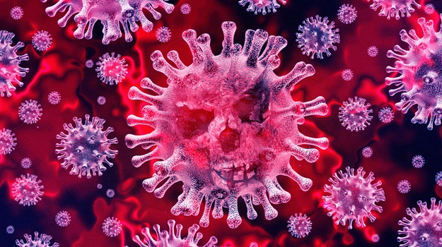
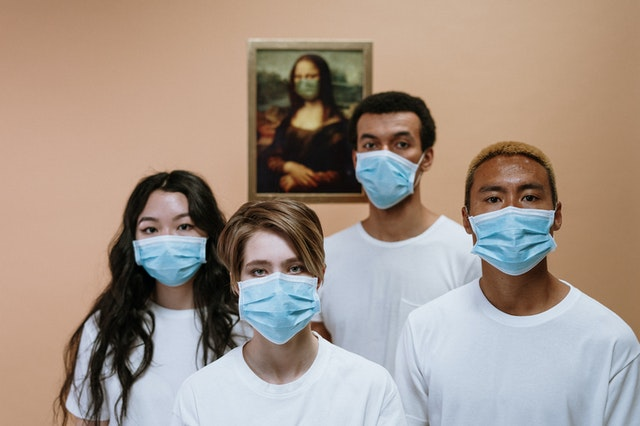
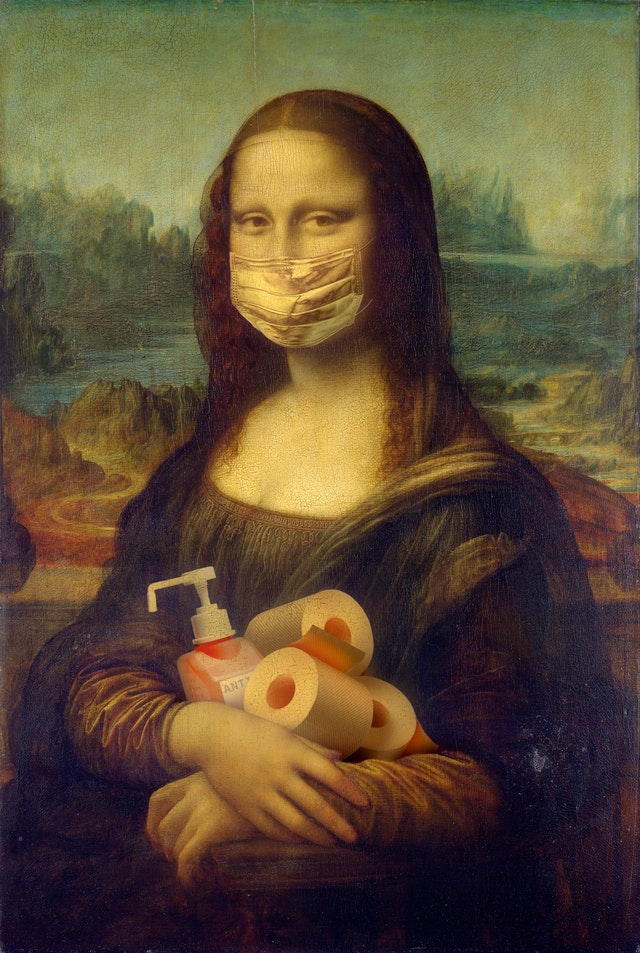

COVID-19
Os coronavírus são uma grande família de vírus comuns em muitas espécies diferentes de animais, incluindo camelos, gado, gatos e morcegos. Raramente, os coronavírus que infectam animais podem infectar pessoas, como exemplo do MERS-CoV e SARS-CoV. Recentemente, em dezembro de 2019, houve a transmissão de um novo coronavírus (SARS-CoV-2), o qual foi identificado em Wuhan na China e causou a COVID-19, sendo em seguida disseminada e transmitida pessoa a pessoa.
A COVID-19 é uma doença causada pelo coronavírus, denominado SARS-CoV-2, que apresenta um espectro clínico variando de infecções assintomáticas a quadros graves. De acordo com a Organização Mundial de Saúde, a maioria (cerca de 80%) dos pacientes com COVID-19 podem ser assintomáticos ou oligossintomáticos (poucos sintomas), e aproximadamente 20% dos casos detectados requer atendimento hospitalar por apresentarem dificuldade respiratória, dos quais aproximadamente 5% podem necessitar de suporte ventilatório.
Sintomas da COVID-19
A COVID-19 afeta diferentes pessoas de diferentes maneiras. A maioria das pessoas infectadas apresentará sintomas leves a moderados da doença e não precisarão ser hospitalizadas.
Sintomas mais comuns são:febre,tosse seca,cansaço.
Sintomas menos comuns:dores e desconfortos,dor de garganta,diarreia,conjuntivite,dor de cabeça,perda depaladar ou olfato,erupção cutânea na pele ou descoloração dos dedos das mãos ou dos pés.
Sintomas graves:dificuldade de respirar ou falta de ar,dor ou pressão no peito,perda de fala ou movimento
Procure atendimento médico imediato se tiver sintomas graves. Sempre ligue antes de ir ao médico ou posto de saúde, clínicas ou hospitais.
Pessoas saudáveis que apresentarem os sintomas leves devem acompanhar seus sintomas em casa.
Em média, os sintomas aparecem após 5 ou 6 dias depois de ser infectado com o vírus. Porém, isso pode levar até 14 dias.
Prevenção
As recomendações de prevenção à COVID-19 são as seguintes:
Lave com frequência as mãos até a altura dos punhos, com água e sabão, ou então higienize com álcool em gel 70%. Essa frequência deve ser ampliada quando estiver em algum ambiente público, quando utilizar estrutura de transporte público ou tocar superfícies e objetos de uso compartilhado.
Ao tossir ou espirrar, cubra nariz e boca com lenço ou com a parte interna do cotovelo.
Mantenha distância mínima de 1 (um) metro entre pessoas em lugares públicos e de convívio social. Evite abraços, beijos e apertos de mãos.
Higienize com frequência o celular, brinquedos das crianças e outro objetos que são utilizados com frequência.
Se estiver doente, evite contato próximo com outras pessoas, principalmente idosos e doentes crônicos, busque orientação pelos canais on-line disponibilizados pelo SUS ou atendimento nos serviços de saúde e siga as recomendações do profissional de saúde.
Recomenda-se a utilização de máscaras em todos os ambientes. As máscaras de tecido (caseiras/artesanais), não são Equipamentos de Proteção Individual (EPI), mas podem funcionar como uma barreira física, em especial contra a saída de gotículas potencialmente contaminadas.
E como todos já imaginamos o Coronavirus não possui tratamento nem cura, porém todos os dias estão correndo na tentativa de encontrar a cura.